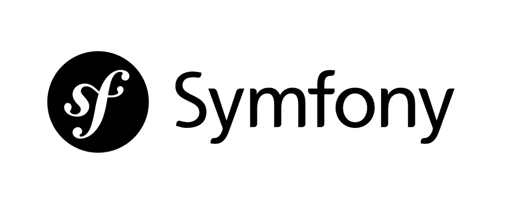

PHP, or hypertext preprocessor, is an open-source server-side scripting language. It’s extremely popular, too — almost 80% of all websites were using PHP.
A PHP framework provides a basic structure for streamlining the development of web apps. We use them because they speed up the development process.
Above all, the responsiveness of websites and applications built using PHP frameworks helps businesses fulfill their performance needs. So there’s no doubt that PHP frameworks will continue gaining attention and popularity in 2019.
PHP frameworks make agile development possible. If you are starting a new PHP project you should definitely consider picking a modern PHP framework to provide well-organized, reusable and maintainable code. They make it easier to grow your application over time and scale.
Most modern PHP frameworks follow the MVC (Model-View-Controller) pattern that ensures the separation of presentation and logic and promote modern web development practices.
Laravel is a relatively new PHP framework but un-arguably the most popular PHP Framework out there to date. Learning Laravel is easy since each release is fully documented. They also provide many screencasts, tutorials, and blog updates.
Laravel has many features that make rapid application development possible. The Artisan command-line interface provides a number of helpful commands while developing the application. Laravel has a powerful templating engine too, which enables common tasks such as authentication, caching, sessions, RESTful routing, and queuing easier for developers.
It has a huge ecosystem with an instant hosting and deployment platform. Laravel can be easily developed with the pre-packaged Homestead bundle with Vagrant.
Laravel is a free, open-source PHP web framework, created by Taylor Otwell and intended for the development of web applications following the model–view–controller architectural pattern and based on Symfony.

« Symfony is a set of PHP Components, a Web Application framework, a Philosophy, and a Community — all working together in harmony. »
A PHP web framework is a collection of classes, which helps to develop a web application. Symfony is an open-source MVC framework for rapidly developing modern web applications. Symfony is a full-stack web framework. It contains a set of reusable PHP components. You can use any Symfony components in applications, independently from the framework.
Symfony’s well-organized structure, clean code, and good programming practices make web development easier. Symfony is very flexible, used to build micro-sites and handle enterprise applications with billions of connections.
Symfony Framework - Features
Model-View-Controller based system
High-performance PHP framework
Code reusable and easier to maintain
Session management
Error logging
Full-featured database classes with support for several platforms
Reduces development time overhead.
Microframework − Symfony can be used to develop a specific functionality. You don’t need to redevelop or install the entire framework.
Extremely mature templating engine and quickly delivers content to the users.
Compatible and extensible − Programmers can easily extend all framework classes.
 Download
Download